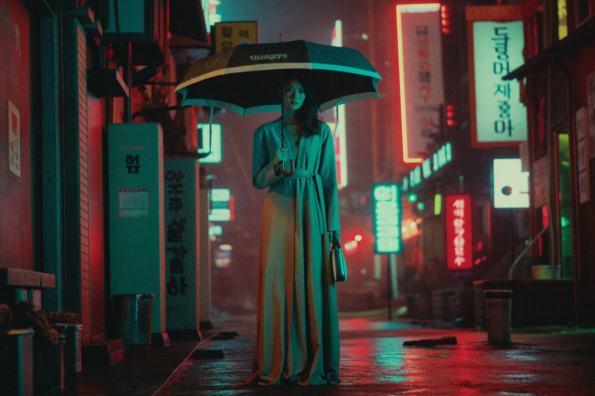
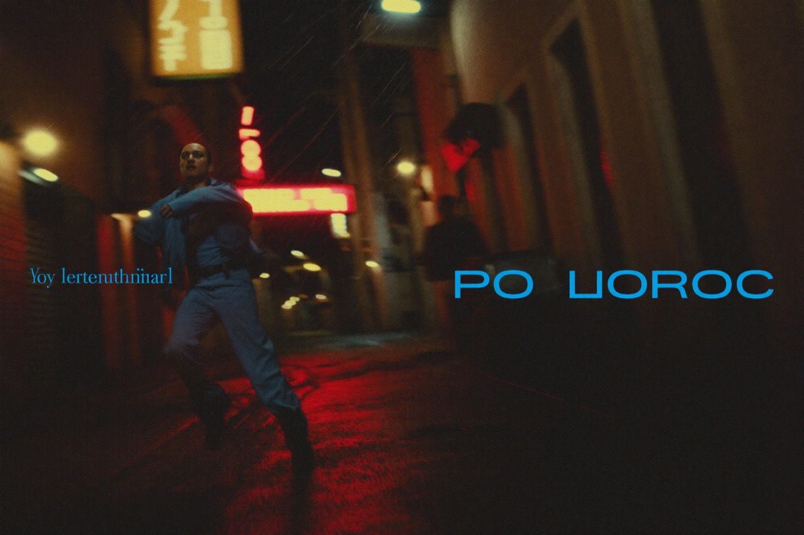

톤티비의 핵심은 2분 내외의 세로형 숏폼 드라마다. 짧지만 강렬한 스토리와 회차를 거듭하며 완성되는 서사 구조로, ‘한 번 보면 멈출 수 없는’ 새로운 시청 경험을 제공한다.
액션, 멜로, 코믹, 사극 — 장르를 넘나드는 미니 드라마가 빠른 호흡으로 이어진다. 한 회가 끝나는 순간 다음 회가 궁금해지는 설계가 높은 완주율과 재방문을 만든다.
멈출 수 없는 설계
숏폼 드라마는 ‘기승전결’을 2분 안에 압축한다. 매 회차는 강렬한 훅으로 시작해 클리프행어로 끝나고, 시청자는 자연스럽게 다음 회차로 넘어간다. 세로형 풀스크린은 모바일에 100% 맞춰진 몰입감을 만든다 — 가로로 돌릴 필요도, 자세를 바꿀 필요도 없다.

장르의 폭도 무기다. 긴장감 넘치는 액션, 설레는 멜로, 빵 터지는 코믹, 횃불 켜진 사극까지 — 같은 플랫폼 안에서 취향대로 골라 본다. 하나의 세계에 머무르지 않고 장르를 넘나드는 ‘포털 점프’ 같은 경험이다.
왜 지금 숏폼인가
1~2분짜리 세로형 드라마는 모바일 환경에 최적화된 몰입감으로 OTT의 무게중심을 옮기고 있다. 짧은 러닝타임은 진입 부담을 낮추고, 높은 완주율은 광고 효율과 직결된다. 시청 패턴 자체가 바뀐 것이다 — 숫자가 그것을 증명한다.
$7.8B
2026 숏폼 드라마 인앱 매출 전망 (Deloitte)
+8,000%
2024 글로벌 마이크로드라마 매출 폭증 (전년比)
4종
액션·멜로·코믹·사극 — 장르를 넘나드는 라인업
짧지만 강렬한 스토리와 회차를 거듭하며 완성되는 서사 구조로, ‘한 번 보면 멈출 수 없는’ 새로운 시청 경험을 제공한다. — 톤코퍼레이션 보도자료
※ 현재 사이트에 표기된 작품 비주얼은 데모용 시네마틱 목업이며, 정식 가동(2026. 9) 시 실제 오리지널·라이센스 콘텐츠로 제공됩니다.
블로그 전체 보기